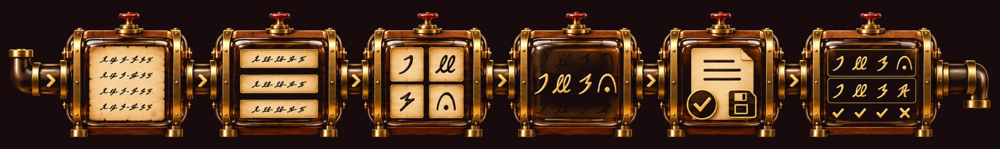
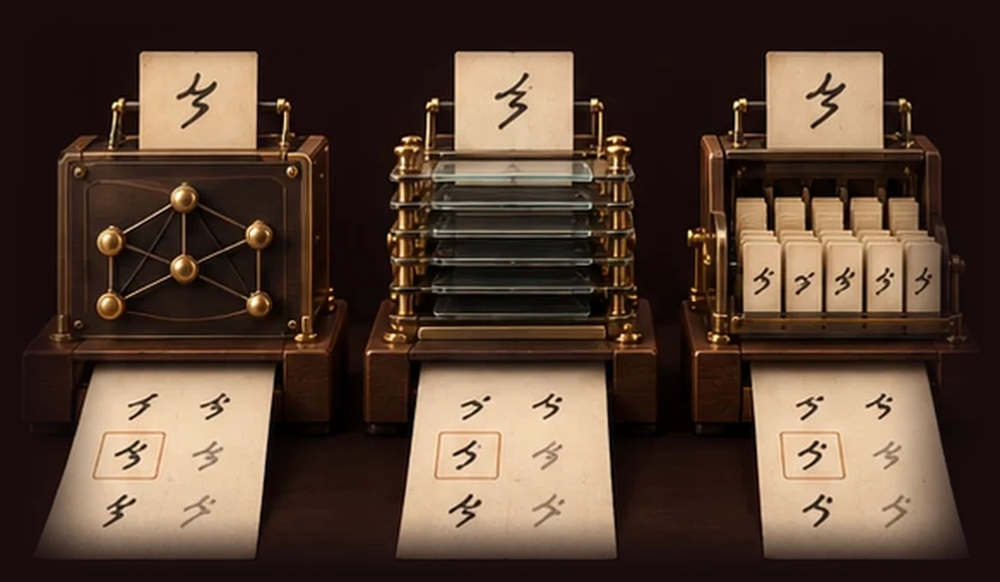
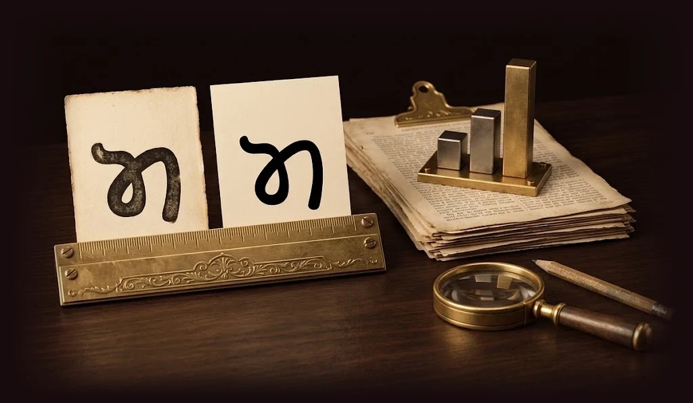
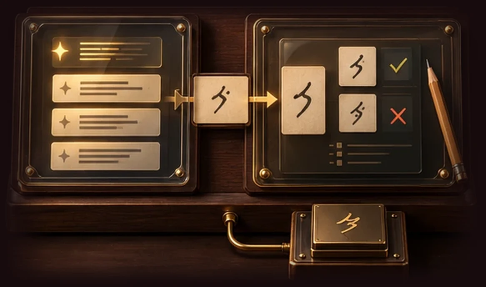
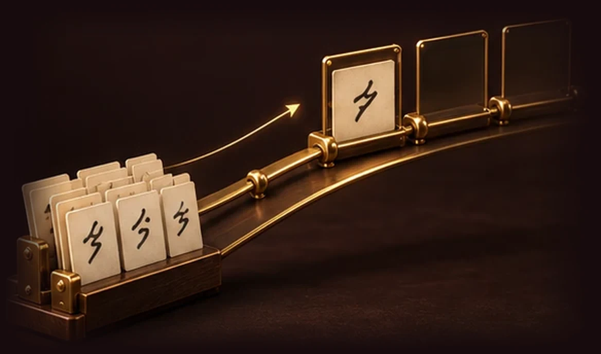

The Score Said Perfect. The Image Didn't.
Line finding took eight attempts. One found all 35 lines, but an overlay showed it was cutting characters off the left edge. Now I always look at the output, not just the number.
01 · How it works
The goal is simple: take a scanned page from an 1896 Khojki book and turn it into readable Unicode text. I built a five-stage pipeline for it. Pick a stage to see what it does.

Barely any labelled examples, century-old printing, and no OCR tool built for this script.
There are barely any labelled examples of Khojki, the printing is over a century old, and modern OCR tools aren't designed to recognize it. So everything here was built and measured from three pages of one book.
1896
printed Khojki from the Narsi Mehta book
First, figure out where the actual writing is.
The program converts the scanned page into black and white, removes the printed borders, and looks for rows where ink is concentrated. These become the text lines.
35/35
lines found across the three pages, after eight iterations
Next, separate each line into individual characters.
This is trickier than it sounds. In Khojki, a single character can be several disconnected pieces, such as a letter with a dot or vowel sign above it.
The program finds connected regions of ink and groups nearby pieces into boxes. The boxes aren't always perfect, and that's fine: the recognition stage is built to correct some splitting mistakes.
Two marks are found by their shape first: the section mark (𑈻, or 𑈼 when doubled), a thin rule across the line, and the abbreviation sign (𑈽), a small ring. A section mark used to be joined to the letter next to it. Now all 3 marks on the test lines are read right.
1 ≠ 1
one character isn't always one piece of ink
This is where most of the interesting work happens.
Instead of training a large neural network, I built a reference library of glyph images: 150 labelled by hand from the original book and 2,666 generated from Khojki fonts.
For every unknown glyph, the program finds the seven most similar examples and lets them vote on what it is. The closer the match, the more its vote counts. Letters and vowel signs are recognized separately, and different ways of grouping neighbouring boxes are tested.
I tried three neural approaches, and they all did worse. With so little real training data, nearest-neighbour matching was more accurate, easier to debug, and improved the moment I labelled more examples.
2,816
reference glyphs: 150 real, 2,666 from fonts
7
nearest examples vote on each glyph
The program should never pretend to know something it doesn't.
Every prediction gets a calibrated confidence score. A character is only accepted when:
Otherwise its best guess is written and marked as a guess, with the top three saved for review. If even the best guess is under 30%, it's written as �. Before export, the text is checked against Khojki's Unicode ordering rules. The output is readable text, a JSON record of every prediction, and PAGE-XML for archival tools.
95%
accuracy a character must reach before it is accepted
What makes the pipeline useful: I can tell exactly where it goes wrong.
Every stage saves its results separately, so I can swap one stage's output for the correct answer and see how much the transcription improves. On the development lines, that gives the errors by stage:
For the final test I held back two lines that were never used during development. That's still a high error rate, and I'm not hiding it. What matters is that I know which parts to improve, and can measure whether each change actually helps.
40.8%
character error rate on the two held-out test lines
02 · Run It
You need Python 3.11 or newer and the Khojki scans. Each page takes about 15 to 18 seconds, including start-up.
In the project folder, install the package and its test tools.
pip install -e ".[dev]"Put the sample PDF in the folder called khojki-scans inside the project. The scans aren't in the repository, because the pages are for this exercise only.
Use pages 9, 10 or 11.
Give it the PDF and a page number. A single page image also works.
python -X utf8 -m khojki.pipeline khojki-scans/sample_khojki_script_vatiations.pdf --page 9 --out out/When it finishes, it prints a summary of the page:
sample_khojki_script_vatiations_p09 (10.8 s)
Lines found 11
Word separators found 52 (written as text)
Characters found 158
certain (green) 0 (95% sure or more)
best guess (orange) 127 (written as the best guess; top 3 in the .json)
no good guess (red) 31 (best guess under 30%, written as �)
Unicode order problems 0A character counts as certain only when the program is at least 95% sure. None reach that yet, so each one is written as its best guess, with the top three saved in the .json file. When even the best guess is under 30%, it's written as � instead.
The answer key is the lines I labelled by hand. This command runs the whole pipeline on the 9 development lines and compares the result with the answer key. Each line is read by a model that never saw that line.
python -X utf8 gt/eval_cer.pyIn plain terms (whole pipeline, 9 development lines, each scored by a model that never saw it):
Best guess for every character: 38.8% character error rate, about 4 in 10 characters wrong.
The .txt as written: 40.7%. It holds the best guesses too; only glyphs with no good guess
(best guess under 30%) are written as �, and those count as wrong.
Where the errors come from: recognition 64, glyph boxes 19, line finding -2.Character error rate is the share of characters that are wrong, missing or extra. 38.8% means about 4 in 10 characters are wrong when you take the program's best guess. On the 2 test lines I held back until the end, it was 40.8%.
To check the code itself, run the 32 tests:
python -X utf8 -m pytest -qStart the demo server, then open http://localhost:8000 in a browser. It serves this page, and the Try the Demo button opens the demo, where you can pick a sample page or upload your own and watch each stage.
python -X utf8 demo/server.pyEach run saves three files in a folder called out inside the project. The files are named after the page, so page 9 of the sample PDF gives sample_khojki_script_vatiations_p09 with the endings .txt, .json and .xml. If you run the same page again, its three files are replaced. The pipeline doesn't save anything anywhere else.
.txt
The page as Unicode text, one line per printed line. Characters with no good guess are written as �.
.json
Every line and character with its position on the page, the answer or the top three guesses, and how sure the program is of each.
.xml
PAGE-XML, a standard format that archive and transcription tools can open.
03 · Comparison
With almost no labelled Khojki, what's the best way to recognize the characters? Rather than assume a more complicated model would do better, I tested around 20 approaches, from basic image matching to neural networks from recent research. The results surprised me.

Held-Back Test Lines
I labelled 11 lines. I used 9 to build and compare methods, and kept 2 untouched for one final test.
Leave One Line Out
Each method learned from 8 of the 9 lines and was tested on the remaining one. I repeated this 9 times, so every line was tested once.
Two Scores
First guess: was the correct character the program's top answer? Top three: was it among the three suggestions a reviewer sees?
A Luck Check
Every method was tested on the same 105 characters. A statistical test (McNemar's) checked whether a difference was bigger than chance.
Nothing beat plain pixels by more than chance. The best, pixels + HOG, has a 1-in-9 chance of being luck. The only clear result was DANN, and it was worse.
Every step helped, far beyond the spread between repeated runs. Quadrupling the labels gained 23 points. The best model change gained 6, and that wasn't convincing.
Line finding took eight attempts. One found all 35 lines, but an overlay showed it was cutting characters off the left edge. Now I always look at the output, not just the number.
Sauvola is built for uneven old scans; Otsu uses one threshold for the whole page. Otsu got 59 of 80 glyph boxes right, Sauvola 56.
My font examples hold every character equally; real text doesn't. DANN made the two look alike as a whole, so it matched the wrong letters. Drawing the fonts at the real mix cut its loss from 15 glyphs to 3.
JA 𑈐, MA 𑈤 and BA 𑈡 share the same arch; only the left part differs. Rules built on clean font letters told them apart 95.5% of the time. In the book, they read 44.1% of those letters right, down from 58.8%. I left them out.
With a vowel sign attached, the matcher compares the sign more than the letter. Of the wrong letters on the development lines, 86% (25 of 29) were caused by the sign next to them.
Five familiar characters were right in all 14 cases. Tested on unseen lines, the same rule was right 5 times out of 12. I dropped the rule.
The simplest approach kept winning: compare the pixels and let the seven nearest examples vote. The bottleneck was the data, and now I have the experiments to prove it.
04 · Data
The more advanced models scored lower than simple pixel matching. The reason wasn't the models. It was the data I gave them.
Each model needs data of a certain size, letter mix and appearance. I had 150 labelled glyphs from the book, 722 unlabelled glyphs, and 2,666 font images that look different from the 1896 print.
If the data is changed to match what a model needs, that model can do better.
| Model | Needs | What I had | Right first guess |
|---|---|---|---|
| Pixel MatchingCompares a glyph's pixels with labelled examples. The 7 closest vote. | A few labelled examples that look like the glyphs being read. | 150 labelled glyphs from the book. | 68.6% |
| Neural Network (CNN)Learns letter shapes from labelled examples. | Hundreds of labelled examples per letter. | About 150 labelled glyphs in total, across dozens of letters. | 61.0% |
| SimCLRA neural network that also learns from glyphs without labels. | Thousands of unlabelled glyphs. | 722 unlabelled glyphs from 24 lines. | 65.7% |
| DANNA neural network trained to treat font images and printed glyphs alike. | Each letter appearing about as often in the font images as in the book. | The font images have each letter once. The book uses common letters far more often. | 54.3% |
Share of the same 105 test glyphs where the model's first guess was the correct letter.
Two experiments support this. In each one, I kept the model the same and changed only the data.
54% → 66%
I changed how often each letter appears in the font images to match the book. DANN went from 54.3% to 65.7% correct first guesses.
46% → 69%
I gave the pixel matcher 25%, 50%, 75% and 100% of my labelled glyphs. It scored 46%, 58%, 65% and 69%. No change to the model itself added more than about 6 percentage points.
The next step is to change the data, then test the same models again.
With 105 test glyphs, only differences of about 9 percentage points can be trusted. A test set of about 50 lines (950 glyphs), labelled by a Khojki reader without suggestions, could show differences of 3 points.
About 12 hours
Cut out every glyph from more pages of this book, group similar glyphs automatically, and have a reader label each group at once. Today each glyph takes up to 44 seconds. The VOLTAGE project used this method to label about 14,000 glyphs of Takri, a related script.
Needs more scans of this book
The printed strokes are about 40% thicker than in the font images. Make the font strokes thicker, include each letter as often as it appears in the book, and copy the print's ink texture onto the font images.
Run pixel matching, the CNN, SimCLR and DANN again on the new data, each at several data sizes and with 3 random seeds. This shows how much data a neural network needs before it does better than pixel matching.
At about 500 to 800 labelled lines, use a model that reads whole lines, such as Kraken. This would remove the 19 errors caused by cutting lines into glyphs.
Change the data first, then compare the models again.
05 · Research
I started this project knowing little about OCR. This is how I learned it quickly, and the routine I followed while building.

I started by searching how OCR works and brushing up on computer vision models in general. Then I watched videos that walk through real OCR pipelines, so I could see how the parts fit together before I built any of them.
Next, I learned how an OCR pipeline changes between everyday languages like English and Spanish, and why both are easier to read than most: they have large labelled datasets and ready-made models. Then I asked what a language with almost no resources would need. Khojki has barely any labelled examples, a print from 1896, and no OCR tool built for it. That told me where the hard part would be.
I decided not to learn all of OCR before starting. I learned it the way the pipeline works, one stage at a time, and spent the most time where the errors were. Recognition caused 64 of the 81 errors, so that's where most of my reading went.
For recognition, I read recent papers and GitHub projects on reading rare scripts, including work on matching font images to real glyphs. I didn't take their results on trust. I tested their methods on my own data, and when the method they rated best did worst on mine, I worked out why.
I repeated this for every stage and wrote each decision in a project log. It has 91 entries.
06 · AI Tools
I used Claude Code as a coding partner. To keep its work reliable, I set up three skill files and a commit hook, and I checked every glyph myself in a review tool.

A skill file is a short set of instructions Claude follows for one kind of task. These three set how it works on this project.
Before building anything that could be designed more than one way, Claude writes down what will be built, what won't, and how we'll know it's done. It kept the work from drifting, and gave me a checklist to judge the result against. The recognition stage started from one.
Before any number is reported, it has to be reached a second way, for example by recounting a total from the raw files instead of trusting the code that produced it. Code that runs without errors isn't proof it's right. The results in my project log list their second checks.
For decisions without an obvious answer, Claude drafts several approaches that can't see each other, then compares them. Where they disagree is where the real decision is, so I know which questions I need to answer myself. I run this one by hand.
Before every commit, a script runs three checks. It blocks any scan from being committed, because the pages are for this exercise only. It runs all 32 tests. And it runs the pipeline on the real pages and compares the scores with the best ones so far. If any check fails, the commit doesn't go through. That goes for code I wrote and code Claude wrote, so a change that makes the results worse can't be saved by either of us.
AI can suggest readings, but it can't have the final word on a script it has barely seen. So I built a local review tool. Each glyph appears next to the program's suggestions and a full Khojki character chart, and I pick the answer, add marks, or mark it as unreadable. Follow-up questions came to me as cropped pictures of the glyph, and I made each call.
When the suggestions kept defaulting to MA, I rechecked every MA, BA, JA and TA against reference drawings, and changed 15 answers. One glyph took me seven and a half minutes: the AI had read it as two letters, and I showed it was one letter with a long vowel sign.
07 · Next Steps
The pipeline works end to end, and I know where its errors come from. These are the improvements I'd make, in the order I'd make them.

MA, BA, JA and TA look alike, and I'm not a reader. A reader reviewing those letters would make the labels I learn from more reliable.
About 50 lines, labelled without suggestions shown, from pages the pipeline never learned from. That's about 12 hours, and it would let me trust differences of 3 points instead of 9.
Cutting lines into glyphs causes 19 of the 81 errors. I'd go through them one by one and fix the most common cause first.
Letting each pixel shift up to 2 pixels when comparing raised first guesses from 68.6% to 77.1% of 105 glyphs, but it adds about a minute a page.
Group similar glyphs automatically from more pages of the book, so a reader labels a whole group at once.
Thicker strokes, the book's letter frequencies, and the print's ink texture.
It found all 35 lines on three pages, but it was tuned on those same pages. New pages would show whether it holds up.
On the larger data set, with several data sizes and random seeds, to see when a neural network starts to beat pixel matching.
At about 500 to 800 labelled lines, switch to a model that reads whole lines, like Kraken. That removes the glyph-cutting step and its errors.
At 15 to 18 seconds a page, the pipeline could process 45 pages in about 12 minutes, and the PAGE-XML output could go straight into a transcription tool for correction.
08 · What I learned
It was about designing software that's easy to understand, test, and improve.
Each stage has one job and is measured on its own, instead of one complicated system I hope works.
The system knows when it doesn't know, and says so, rather than guessing.
Every new label, segmentation rule, or recognition change can be measured against it.